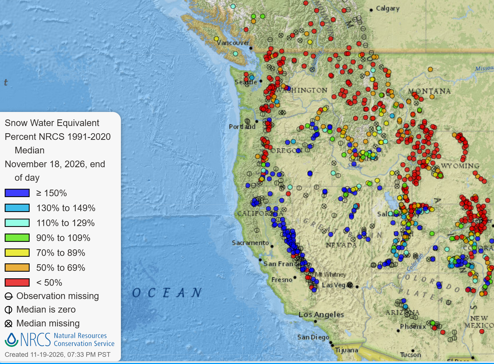
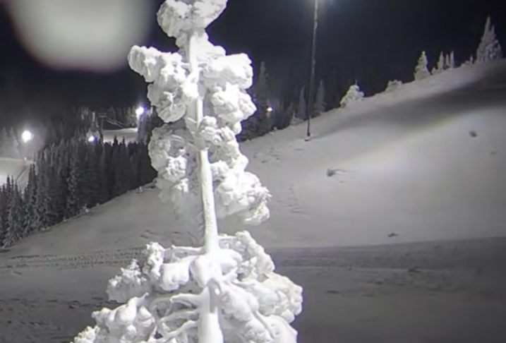

Much of the West got an early Thanksgiving feast, with the Sierra Nevada and Wasatch the big winners, with SNOTEL sites in those regions showing multiple inches of snow water equivalent (see picture below). Washington has been on a cold-weather diet: plenty of cold air, little snow. Freezing levels of 2,500-4,000 ft meant everything that fell in the mountains was snow, but totals were small and concentrated in the south and, unusually, on the east side of the Cascades.

A low-pressure system sat just off the California-Oregon coast. Because lows rotate counterclockwise, its 500 mb flow (~18,000 ft) wrapped northeasterly across Washington, carrying cool, moderately moist air toward the east slopes. Mission Ridge came out with 9", well ahead of Stevens Pass with about 3".

- How last week's forecast did: Last weekend was a mixed bag. We were too optimistic at Baker (6 forecast, 2 observed), Paradise (6 vs 3) and Crystal (3 vs 1). The NBM missed White Pass entirely (0) and was low at Baker and Stevens. Overall we landed within about 1.5 inches on average, about the same as the NBM, and inside the observed range at 6 of 9 areas; full scoring is on the evaluation page.